Pet Vet (Veterinary Clinic Website)
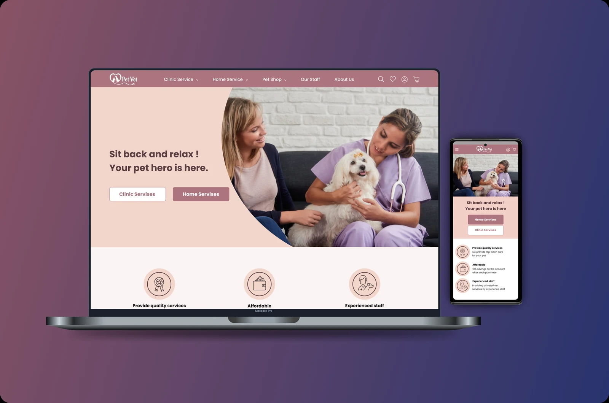
- Role
- UX Researcher and UI Designer
- Timeline
- 2 months
- Tools
- Figma, Google Meet, Miro
Pet Vet Clinic is a website for a veterinary clinic that also offers some services at home. As a team, we took it from zero to one hundred in two months, as part of a UI and UX course. We started by interviewing pet owners, backed that up with a survey and a look at competitors, and then kept testing the design with users, from the hero photo to the booking form, until the details worked.
Objective
The idea and design of this project, from zero to one hundred, were done by our design team in two months. Our goal was to research and design a complete, user-centric website with a simple appearance so that we could provide a comfortable user experience for users.
Business Goal
- Providing quality veterinary services
- Increasing user satisfaction
The Process
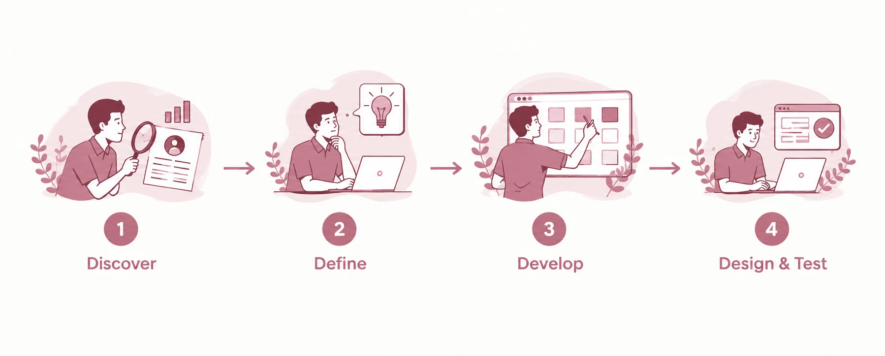
Discover
We started with semi-structured interviews with pet owners to understand their needs, behaviors, and pain points. We then organized the interview findings using an affinity diagram to identify recurring themes and key insights.
To validate these findings with a broader audience, we conducted an online survey. In parallel, we carried out a competitive analysis to explore how competing products address similar user needs through their features and user flows.
User Interview
At this stage of the design process, we used qualitative research to interview several users. Based on these interviews, it became clear that our users are busy people, and saving time is important to them. Users were interested in receiving quality veterinary services at home. Providing quality services was very important for users, and they also wanted to reserve appointment times online.
Affinity Mapping
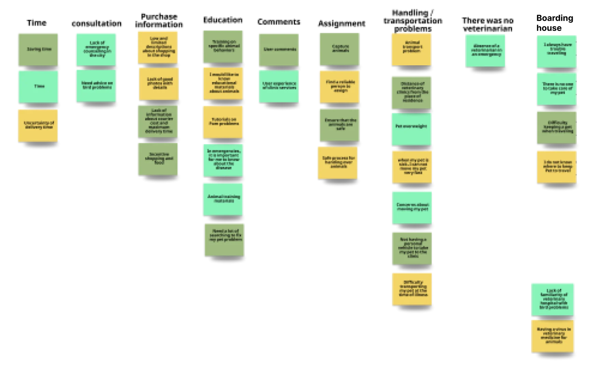
Online Survey
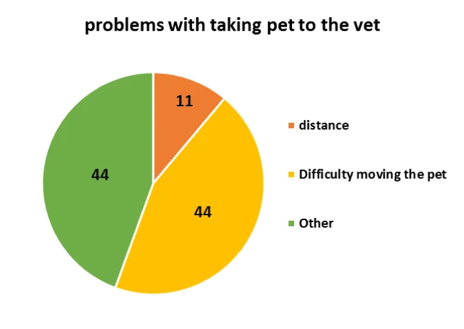
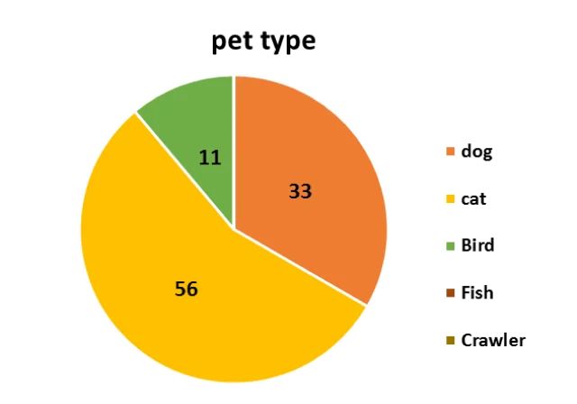
Competitive Analysis
Our design team identified several competitors in the field and then conducted thorough research on their various features and trends. Based on this, we prepared a table to identify the weaknesses and strengths compared to competitors.
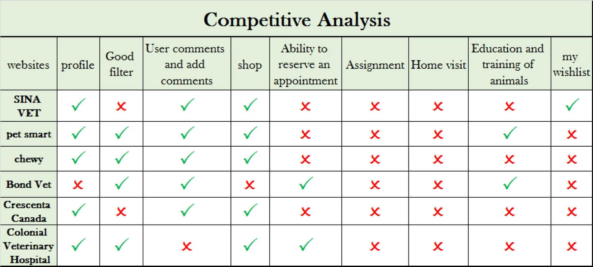
Define
After completing the research, we obtained valuable data and found problems on similar sites. Then, using the research data, we determined the persona based on the main purpose of the business (the main problem).
We designed a scenario to meet the needs of the persona and also specified the user path on the website.
User's Needs
Easy access to all the necessary services for the pet (training, shopping, booking appointments, home visit services).
Solution
- Having a clear menu
- Ability to find information and services (information about doctors and clinics) easily
Persona
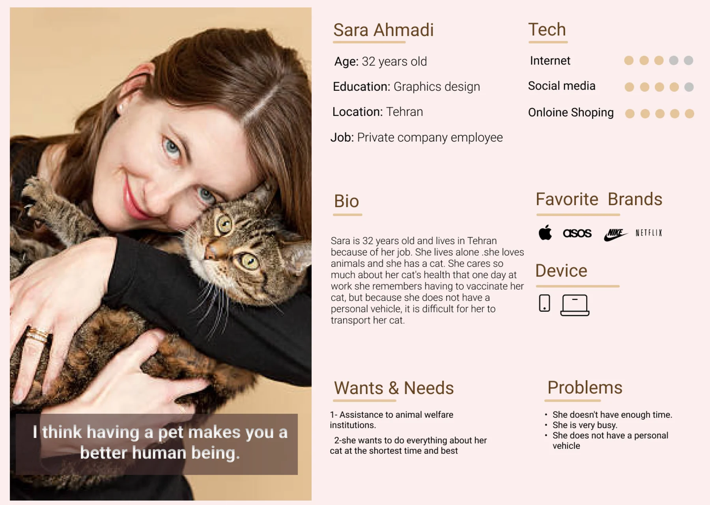
Develop
Scenario & Main User Flow
One day while Sara was at work, she remembered that she had to vaccinate her cat. Since she does not have a personal vehicle, transporting the cat is very difficult for her, so she searches the internet for a veterinary site and finds Pet Vet, which provides home services. She enters the site.
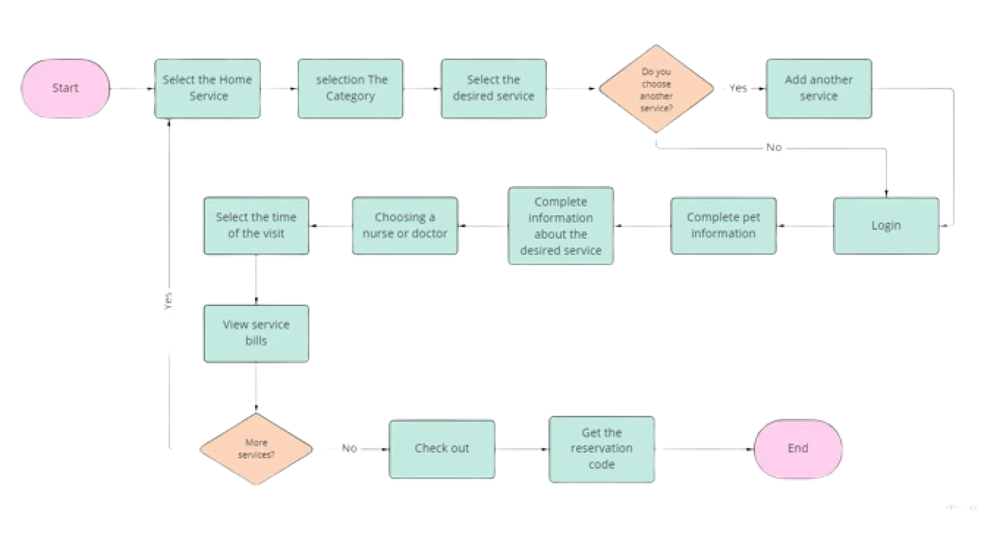
Site Map
We used closed card sorting to determine the information architecture of the website and also drew a sitemap.
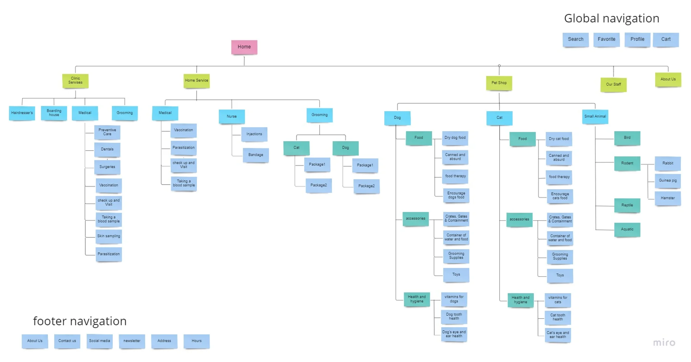
Design & Test
Some of the Wireframes
Based on a lot of research and observations, our team first drew sketches of the website. The designs were simple, and then we completed them.
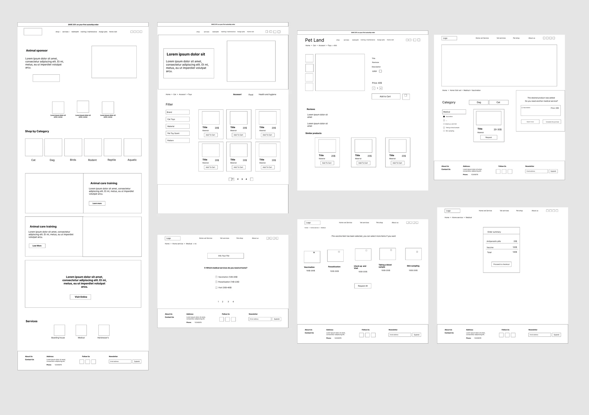
Selected UI Kit Components
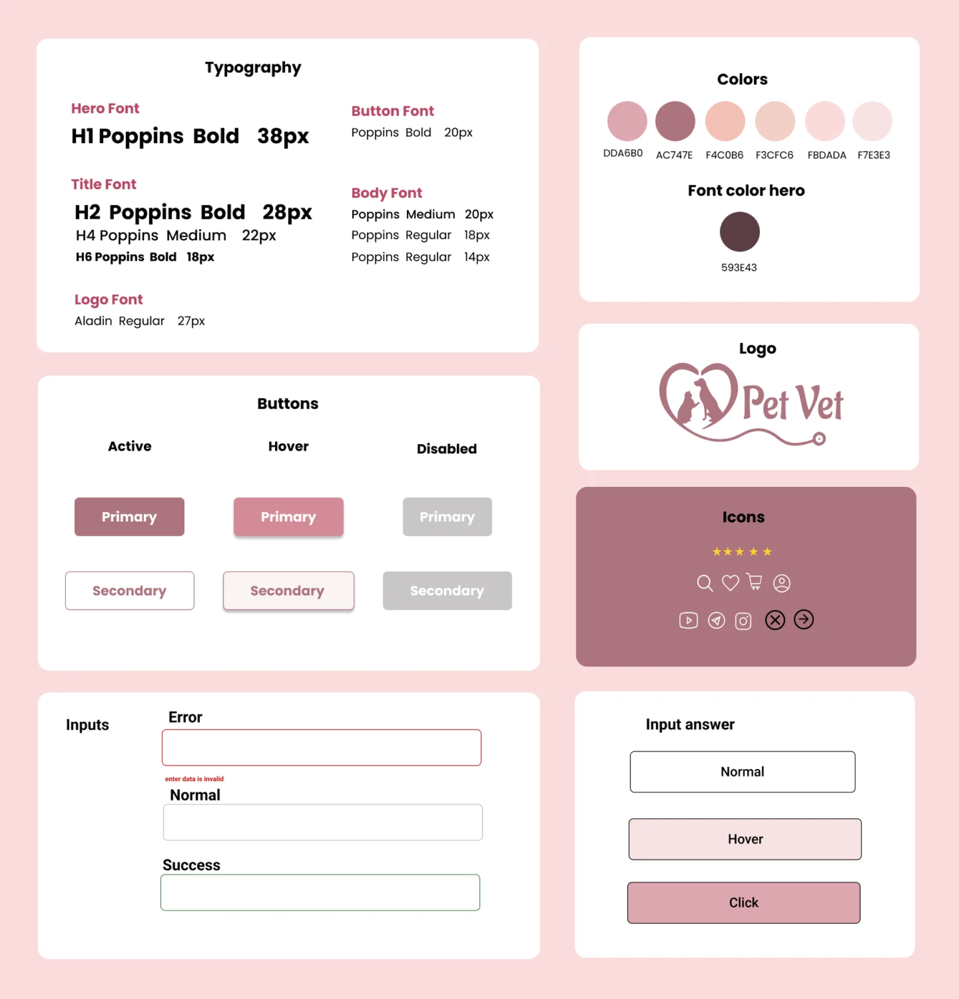
User Testing
- We were looking for a photo that could show the website’s value to the user at first glance, and through testing and feedback, we reached the final version.
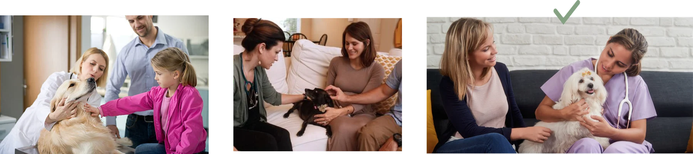
- For the user’s convenience, we placed separate Home Service and Clinic Service buttons in the hero.
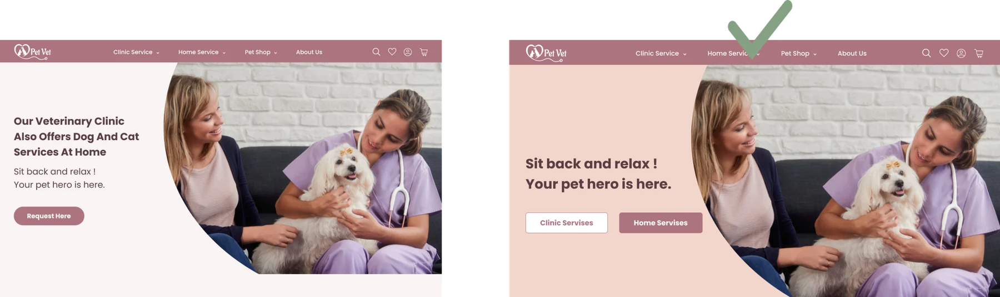
- We first put the clinic staff on the home page, but because of the feedback we received and the large number of staff, we gave them a separate item in the navigation bar.
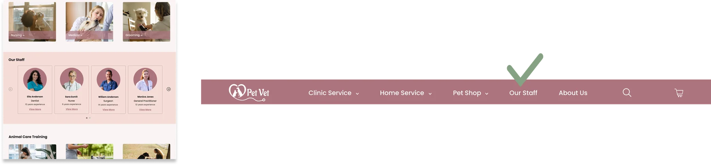
- One of the most important changes in the website’s form design was that, at first, users had access to all the questions on one page, but through the tests we performed, we found that designing the form as a series of single slides makes it easier for users to complete.
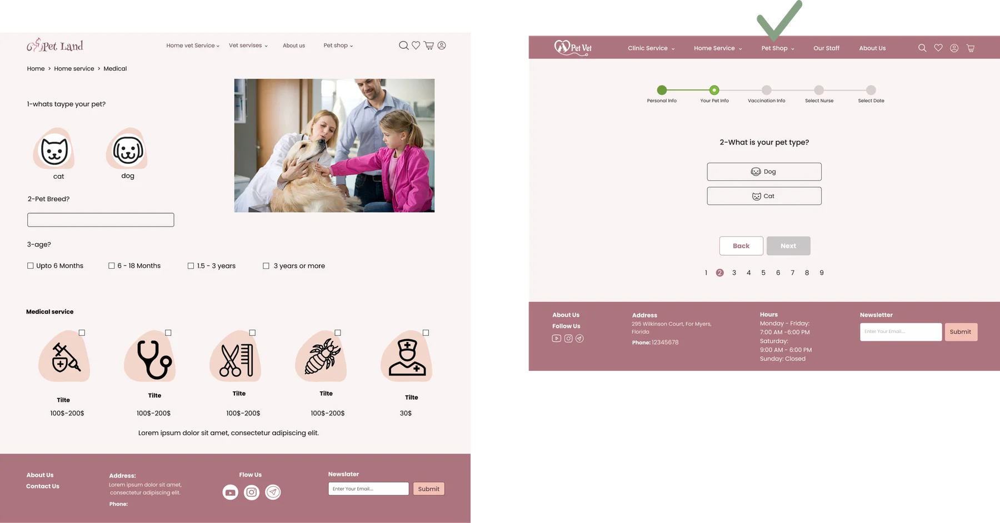
- Two different models were designed to display the menu on mobile, and then, using an A/B test, we found that with one of the designs, users reached the specified goal much faster.
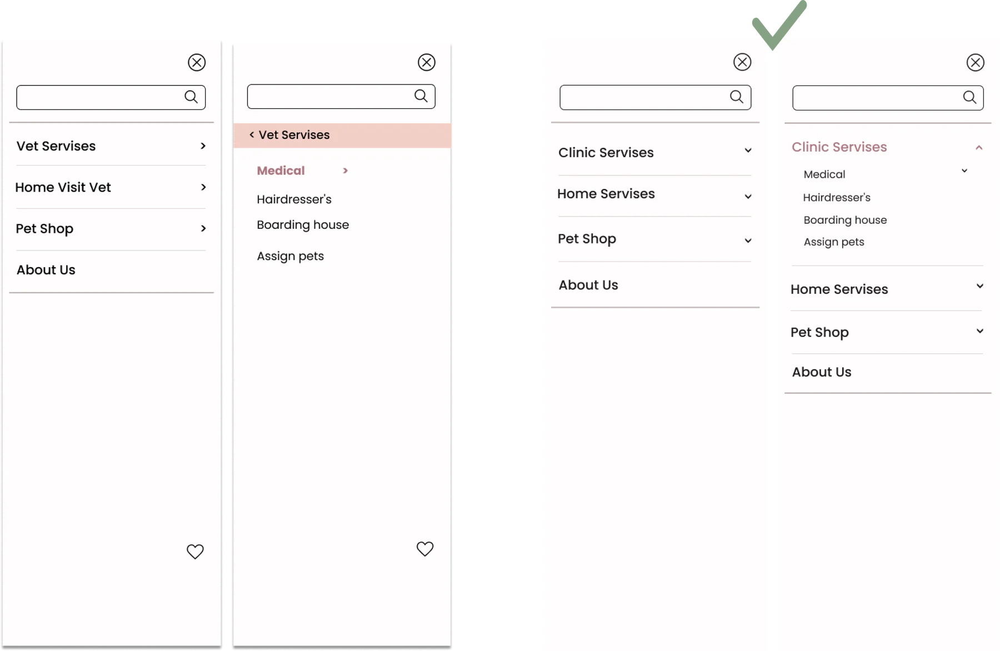
- For the user’s convenience, we included the clinic’s address on Google Maps on the first page of the website.
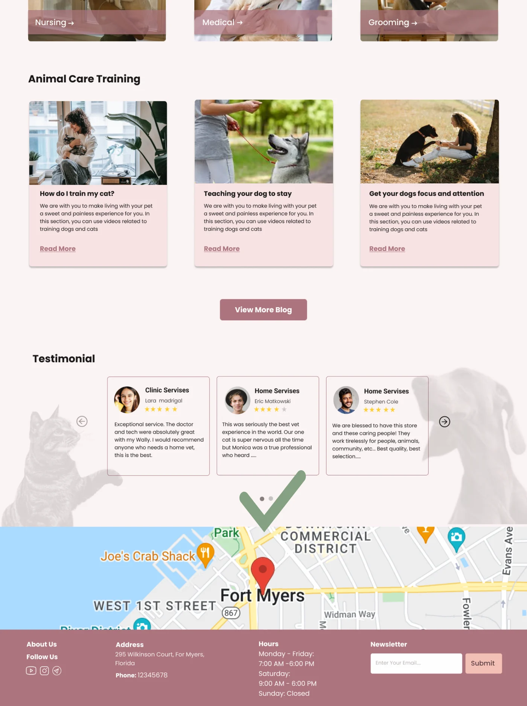